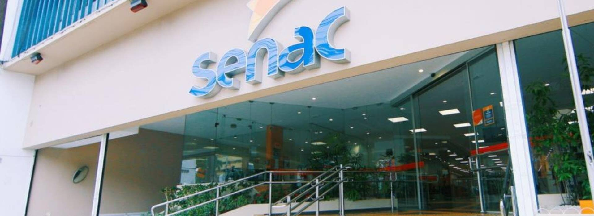

Senac Caxias do Sul
Desde 1946, o Serviço Nacional de Aprendizagem Comercial – Senac é o principal agente de educação profissional voltado para o Comércio de Bens, Serviços e Turismo do País.
Hoje, está presente em mais de 1.800 municípios, de Norte a Sul do Brasil, onde mantém infraestrutura de ponta composta por mais de 600 unidades escolares, empresas pedagógicas e unidades móveis.
Seu portfólio contempla cursos presenciais e a distância, em diversas áreas do conhecimento, que vão da Formação Inicial e Continuada à Pós-graduação e permitem ao aluno planejar sua carreira profissional em uma perspectiva de educação continuada.
